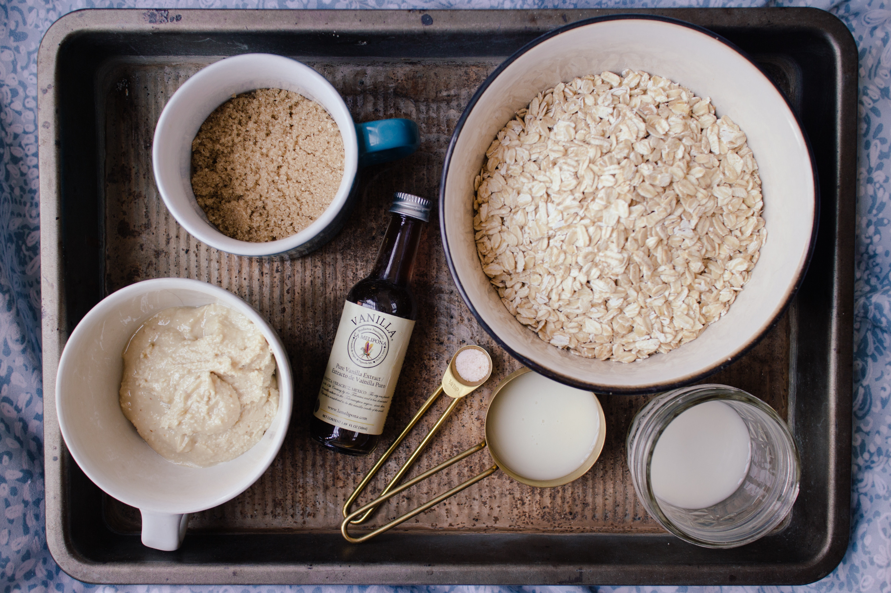

Nos dedicamos a la elaboración de productos de pastelería artesanal, que se destacan por ser saludables y no contener azúcar adicionada.
Nuestro objetivo es proporcionar opciones de repostería saludable a quiénes que por su estilo de vida o por condiciones de salud deben excluir de su dieta el azúcar y/o disminuir el consumo de carbohidratos.